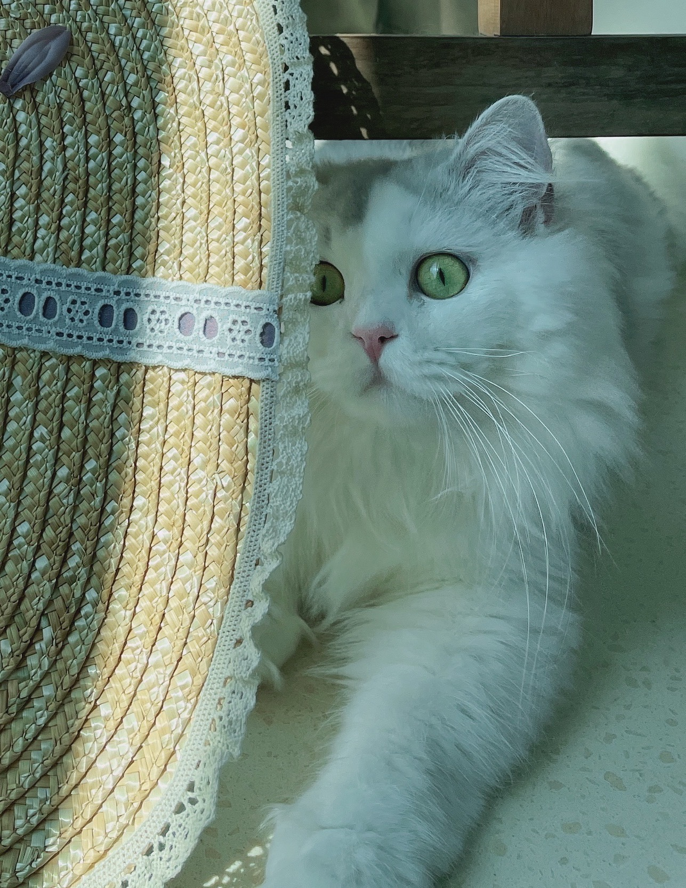

Lab 7 - Fuctions
Challenge
The javascript's functions is a challenge for me. It took me a lot time to understand it. Everything is all new to me, but I enjoy the challenge.
Problems
The problem is to understand the function name sort, split,and join, and I had some problem with how to write with .
Results
The following tasks are doing well, and the result is shown below:
Script Output
